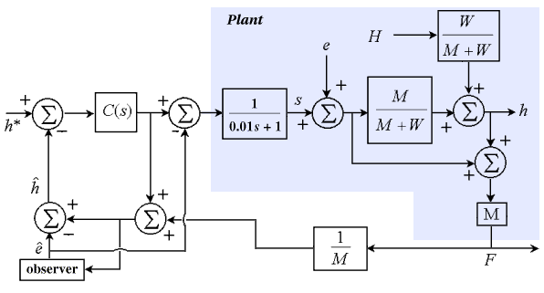

You are here : Control System Design - Index | Simulations | Rolling Mill | Part 5
Rolling Mill Tutorial - Part 5
Before continuing, make sure you have read Section 21.11: Linear Optimal Filters.
Observers
To estimate roll eccentricity, we view the output of the BISRA gauge (which is h + e) as the eccentricity e plus some noise. Before we can use an observer to estimate the roll eccentricity, we need to model it. As before, this model is chosen to be a single sinewave of period 200ms. A suitable "system" for this sinewave of frequency w is

The output of this "system" is simply x1 (so C = [ 1 0 ]). We can then design an observer

for this system to estimate the state variables of the system:

The closed loop characteristic polynomial of this observer is

and using this equation with the desired characteristic polynomial, we can place the observer poles at the desired locations. Alternatively, we can use the Kalman filter equation to find the optimal J. As a starting point, choose J1 = 120 and J2 = 0.
Once we have this estimate of eccentricity (i.e. the estimated x1), we can subtract it from the output of the BISRA gauge to give the new estimate of exit thickness:

To improve performance further, we then emulate disturbance feedforward by subtracting the estimated eccentricity from the controller output u.
This leads us to the following model for the closed loop system:

Java Applet Simulation
The JAVA applet below is a simulation of the above system. The control parameters have been chosen as kp = 20 and ki = 200. The graph has a vertical scale of 0.1mm per division and as in the previous simulation, the horizontal scale of the graph can be altered by the user. It shows the set-point (the blue trace), the actual exit thickness h (the green trace) and the estimated eccentricity signal centred around 0.6mm (the red trace). Normally, the eccentricity is centred around 0, but the plot of it was shifted because the vertical axis of the graph is from 0 to 0.8.
Pressing the "Change Parameters" button allows you to change the same parameters as in the previous simulation, plus the amplitude of the eccentricity signal and the observer gain matrix J.
| Things to try | Things to notice |
| Run the simulation | The system's response is as fast as in the previous case and the sinusoidal variations are almost no-existent |
| Change the set point to 0.3 and the input thickness to 0.5 | The delay has no effect on the set-point or disturbance responses (but the sudden change causes the eccentricity estimate to be incorrect |
| Change the time scale on the graph to 2 sec/div and compare the magnitude of the sinusoidal variations to the previous examples | The eccentricity of the rolls has almost no effect on the output |
| Redesign the observer using the Kalman filter equation | Better observer performance can be achieved, but the effect of the rapid output changes on the eccentricity estimate cannot be removed |
This simulation shows that with the observer, the effect of roll ecentricity is vastly reduced. In fact, for an eccentricity of 0.03, the effect on the output is 0.0024, which represents a 92% reduction, which is quite respectable considering the uncontrolled system performs a 66% reduction. The effect of the eccentricity signal could only be zero if (1) we had an always perfect estimate of eccentricity and (2) we could subtract the estimated eccentricity directly from s (which is not possible since we can only control u). Thus, the filtering effect of the time constant of the screw position means that the eccentricity will always have some effect.
You may have observed the oscillation in both the set-point response and the disturbance response. This is due to the inaccuracies of the eccentricity estimation at these points (a fact easily observed from the graph of estimated eccentricity). The observer will see a change in its input signal, and will take some small amount of time to correct for this.
As we have seen with the progression of these simulations, as we delve deeper into the control problem, we can achieve better performance using more sophisticated methods from control science. However, with each solution comes a new limit on performance (which is better than the previous limit), and hence a new problem to be solved. As you may have guessed, the Kalman filter solution (allowing increased system bandwidth) is by no means the final solution - there exists a phenomenon known as the "hold-up effect" which prevents the system from achieving the promised 10ms response time. This is addressed (particularly in relation to reversing mills - photo) in Section 9.8 (page 242) of the book. Even after this problem is solved, there are further, more complex ones awaiting.
{kind=link}
This concludes the interactive demonstration of rolling mill control.